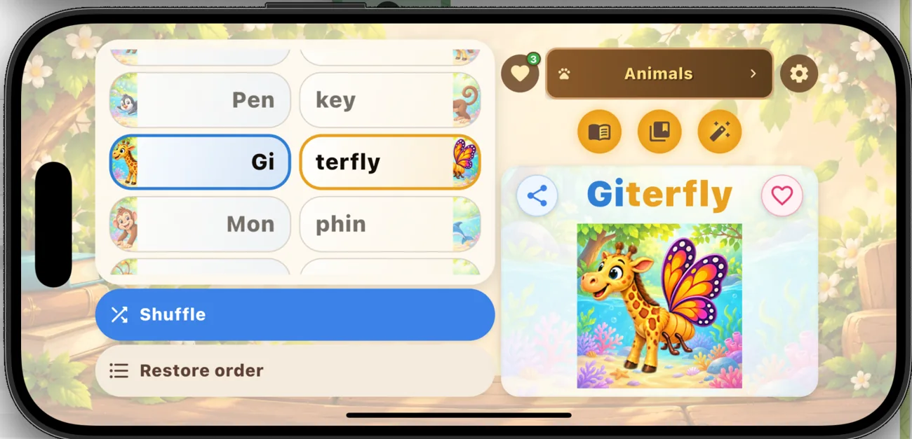
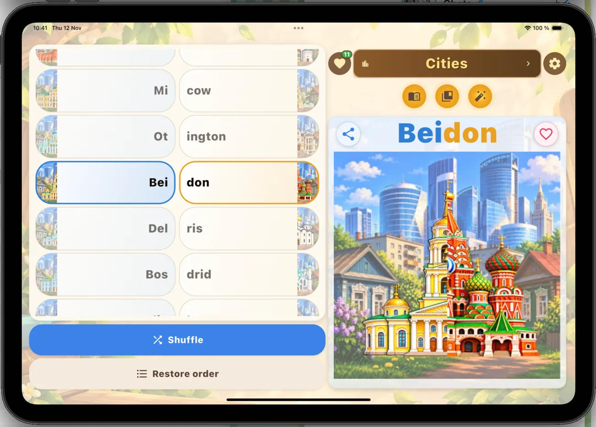
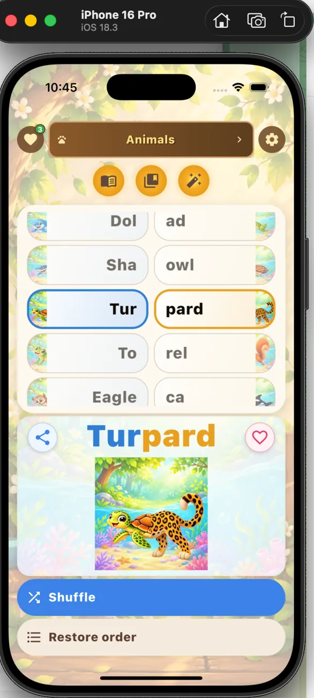
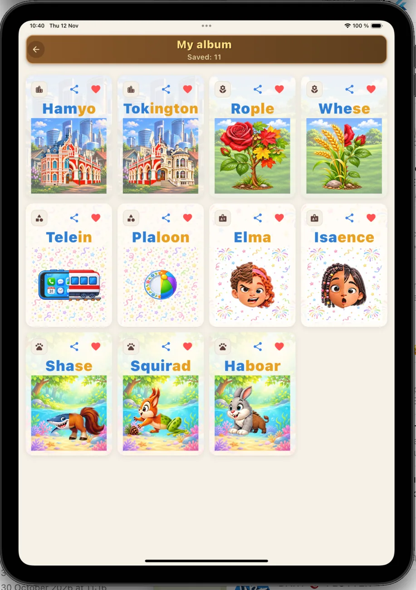

Giterfly
A real mix, straight from the game.
Two spinning reels. Unexpected combinations. A whole lot of funny Mixes.
Real gameplay. Real surprises. No wrong answers.
Turn either reel and see what happens when two words—and two pictures—collide. Every combination is a new discovery.

A real mix, straight from the game.

Not just animals. Cities get wonderfully mixed up, too.

Different screen, same delightful chaos.

Tap the heart on a mix you love. Your favorites stay together in My Magic Album, ready to revisit whenever you want.


Explore themed word packs, or make a custom pack with your own words and photos. The first custom pack is free.
For curious kids, playful grown-ups, and anyone who thinks language is more fun when you bend the rules.
Watch the magic again ↑